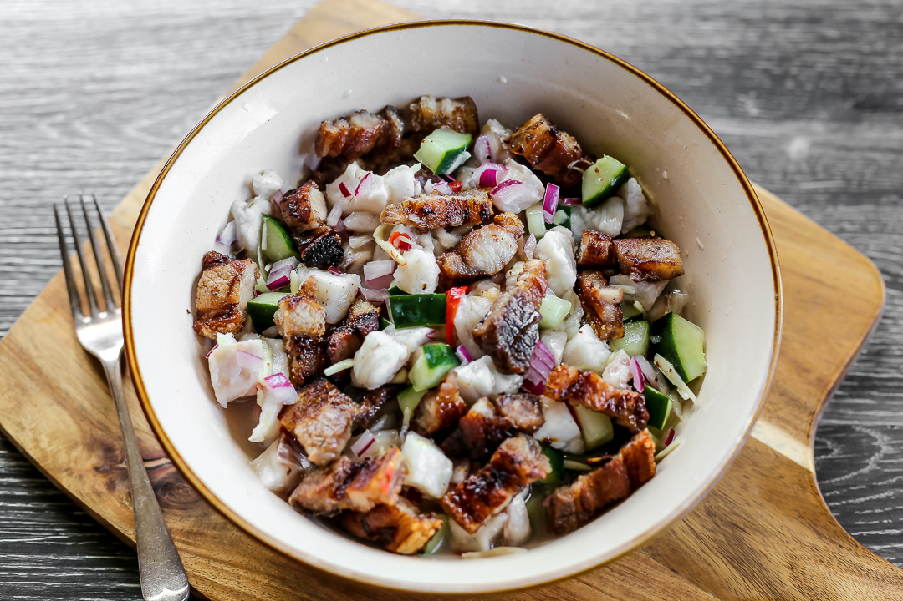

Sinuglaw

Ingredients:
400 g grilled pork belly, chopped
400 g fresh snapper (or any white flesh fish), cubed
1 large cucumber, cubed
1 1/2 cup cane vinegar
1 red onion, sliced
2 tbsp ginger, minced
juice from 1 lemon
4 pcs bird's eye chillies, chopped
salt
freshly ground black pepper
Procedures
- In a non-reactive bowl soak snapper in 3/4 cup of vinegar. Set it aside for 10 minutes.
- Using your hands gently press the fish meat to remove excess liquid. Drain the vinegar.
- Add the cucumber, onion, ginger, chillies and salt. Combine it well.
- Add the lemon juice, then pour the remaining vinegar. Let it soak for an hour while being chilled in the refrigerator.
- Before serving prepare the grilled pork belly, just after cooking, chop it then combine with the fish, mix well then serve.
Back to Homepage